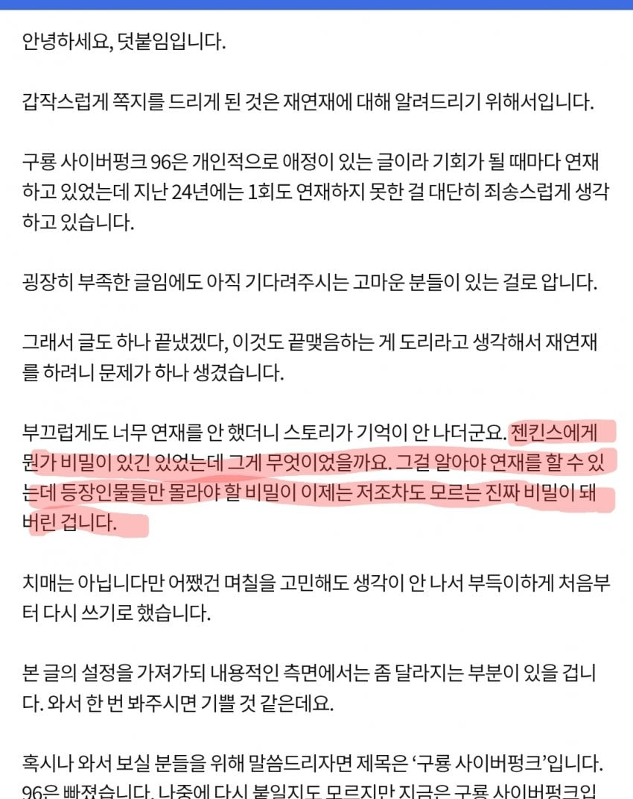

다시 써야하는데 주인공의 비밀이 기억이 안남 ㄷㄷㄷ

다시 써야하는데 주인공의 비밀이 기억이 안남 ㄷㄷㄷ
설정을 왜 기록안해;
겜바바도 컴퓨터 옮기다가 파일 날라가서 작가 치매냐는 말까지 나온거 보면 뭔가 실수가 있었겠지
윤강이는 컴터가 하드가 배드섹터나서 뒤진거 아님?
그래서 기억 더듬어가며 연재하다 도저히 안되겠어서 설정부터 복원한다고 장기휴재고
컴 바꾸다가 깜빡하고 파일 날렸는데 백업파일 있는거 보고 내가 했나? 싶어서 넘어갔다가 나중에 보니 예전 백업본 이었다고 말했자너
긍가? 내가 잘못기억하나
암튼 그래서 언제 재연재하냐..
1화부터 944화까지 하나하나 훑으면서 설정 정리하고 자기가 오류낸거 고친다음 비축분 쓰고 와야하니 1-2년은 더 기다려야 하지 않을까
내 지인도 이번에 웹툰화 하면서 자기가 설정 정리한거 보여줬는데 아무리 러프하게 쓴거라지만 300화 짜리 소설도 책 몇권 분량이던데
1년안에 돌아올줄 알았더니 좀 걸리네
300화(12권)에 몇권 분량이면 설정충임.....
걍 머릿속에 바로 떠오를 정도로 중요한 핵심이라 다른 까먹을만한 설정만 써놨는데 1년 놓고 나니 그때 당연히 떠오를 정도로 중요한 사실이 기억 안 나는 거임 ㅋㅋㅋ
사실 비밀이 리로이 젠킨스였던것임 ㄷㄷ
그래도 우리한텐 닭고기가 있다고.....
리~로이! 젠킨스!!
할배...
비밀이니까
그러게 구로수번처럼 레퍼런스를 두고 썼으면 설정 까먹을 일도 없는데
ㅅㅂㅋㅋㅋㅋㅋ
근데 아무도 모르면 그냥 아무거나 넣어도 되는거 아님? ㅋ
ㅋㅋㅋㅋㅋㅋㅋㅋ 개쳐웃기네
어이가 없긴 하네 ㅋㅋㅋ
등장인물 모두한테 숨기고 있을 정도였으면
나중에 반전 주려고 꽁꽁 숨겨둔 거 같은데 그럼 꽤 중요한 내용 아닌가? ㅋㅋㅋ
Ai썻나보네
핵심 기믹을 잊을 수 있나?
저건 ai 이전 작품아닌가
소환하면 상대방한테 새끼용 2마리를 준다는게 비밀임
젠킨스? 배포를 잘할것같이 생겼군
글쓰다보면 이해는 감... 하도 오래되면 진짜 주요한 내용도 기억 안날 때가 있긴 함
그렇다고 저걸 공지까지 하면
작품 인기 떨어질거 같은데
그것도 맞긴 함 ㅋㅋㅋ
사람이 너무 솔직해도 안된다는게 애매하긴 하지.
설정간의 논리로 파악가능하면 구글 노트북에 넣어서 물어보면 될 거 같은데 그런 것도 아닌가 보군
글 써 본 사람은 공감할걸? 100~200화 넘어가면 진짜 자주 설정집 봐야 할 정도로 기억이 안 남 ㅋㅋ
이왕 이렇게된거 여장이 취미라는 비밀로 하죠